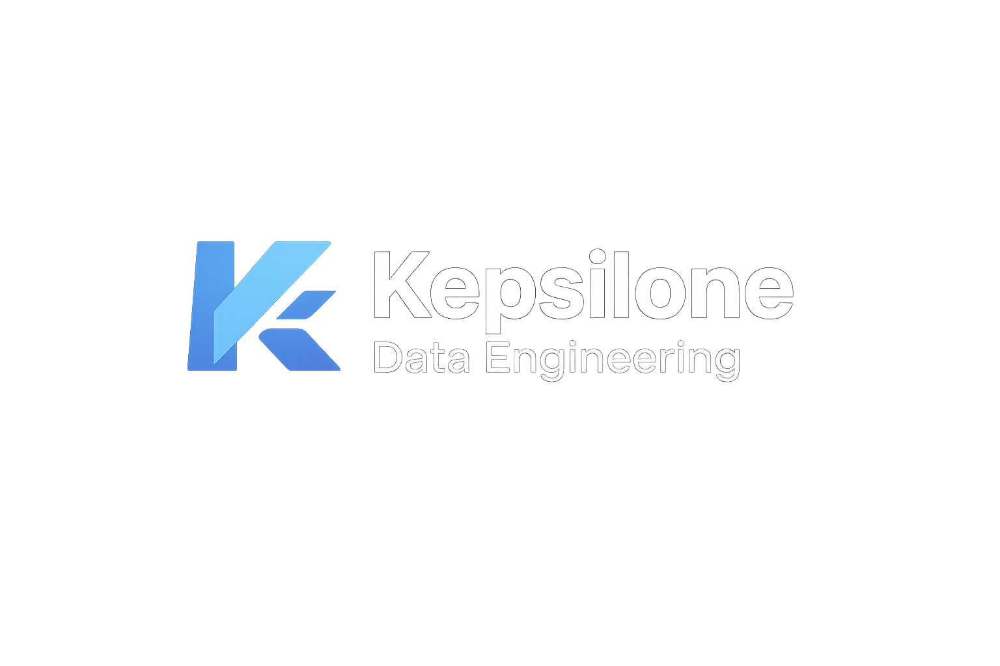
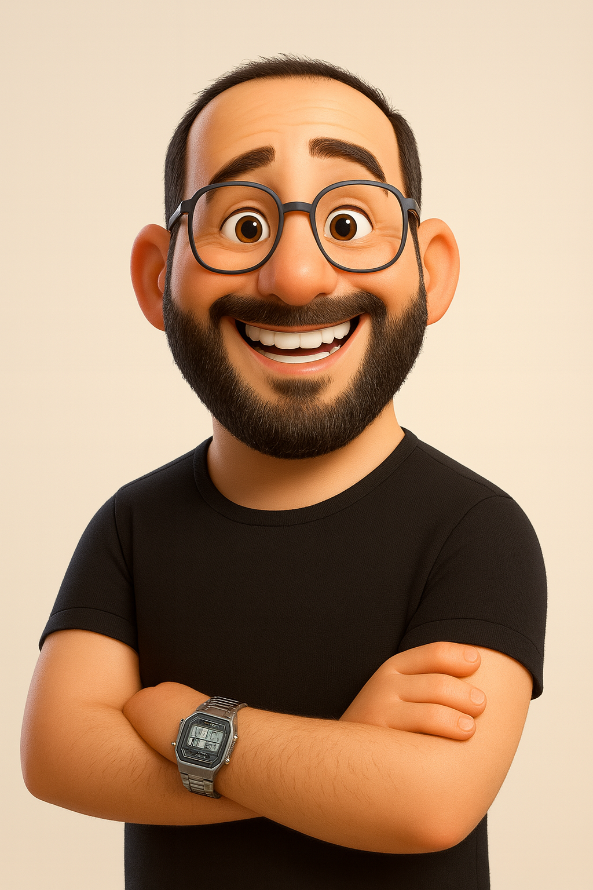

Pipeline streaming crypto — données temps réel
Ingestion en continu via WebSocket Binance, transit Kafka, stockage TimescaleDB, exposition FastAPI. Stack Dockerisée. ~2 000 events/min, latence < 800ms, 4 paires en parallèle.


Projets autour de l'ingestion, du traitement et de l'exploitation de données. Chaque repo documente les choix techniques, les limites et les résultats.
Ingestion en continu via WebSocket Binance, transit Kafka, stockage TimescaleDB, exposition FastAPI. Stack Dockerisée. ~2 000 events/min, latence < 800ms, 4 paires en parallèle.